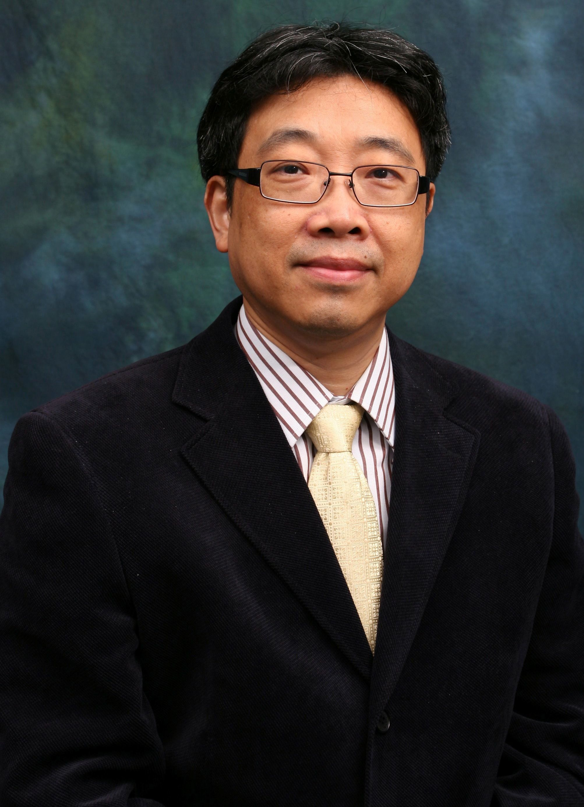
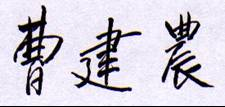

| Jiannong Cao |
 |
Fellow of IEEE (Computer Society)
Distinguished Member of ACM
Senior Member of CCF
BSc (Nanjing University)
MSc, Ph.D. (Washington State University)
Department of Computing
The Hong Kong Polytechnic University
Hung Hom, Kowloon, Hong Kong
Office: PQ817, Mong Man Wai Building
Office No.: (852) 2766 7275
Fax No.: (852) 2774 0842
Email: csjcao@comp.polyu.edu.hk
http://www.comp.polyu.edu.hk/~csjcao
ORCID ID: 0000-0002-2725-2529
Scopus Author ID: 7403354073
Professional Activities
Professional Panels, Boards and Committees
International
- Member, IEEE Computational Intelligence Society (CIS) Smart World Technical Committee (SWTC) (2017- )
- Computer Society representative, IEEE Transactions on Mobile Computing (TMC) Steering Committee (2017-2019)
- Member, IEEE Communications Society Awards Standing Committee (01/2017-12/2019)
- Member, IEEE Computer Society Education Awards Selection Committee (03/2016- )
- Member, IEEE CS Fellows Evaluation Committee (2016, 2015)
- Chair, IEEE Technical Committee on Distributed Processing (TCDP) (06/2012-05/2014)
- Coordinator in Asia, IEEE Technical Committee on Distributed Processing (TCDP) (12/2005-05/2012)
National
- Member, Expert Committee, Guangdong-Hong Kong-Macau Joint Laboratory for Machine Intelligence and Big Data, South China University of Technology, Guangzhou, China (华南理工大学智能机器人与大数据粤港澳联合实验室专家委员会委员) (05/2017- )
- Member, Academic Advisory Committee, College of Information Science and Technology, Jinan University, Guangzhou, China (广州暨南大学信息科学技术学院学术委员会委员) (2016- )
- Member, Academic Advisory Committee, Guizhou Province Key Laboratory for Electric Power Big Data, Guizhou Institute of Technology, Guizhou, China (贵州省电力大数据重点实验室学术委员会委员) (2016- )
- Member, Academic Advisory Committee, Institute of Advanced Computing and Digital Engineering (IACDE), Shenzhen Institute of Advanced Technology, Chinese Academy of Sciences (中国科学院深圳先进技术研究院先进计算与数字工程研究所学术委员会委员) (01/02/2014-28/02/2017)
- Vice Chairman, The Alliance of Sensing China (感知中国物联网联盟理事会副理事长) (2011- )
- Panel of Outstanding Experts, Shanghai Jiao Tong University (for long-term comprehensive evaluation of academic departments) (2009- )
- Member, Academic Committee, Shaanxi Province Key Laboratory for Embedded System Technology, Northwest Polytechnic University, Shaanxi, China (陕西省嵌入式系统技术重点实验室学术委员会委员) (2007- )
- Vice Chairman and Member, Technical Committee of Computer Architecture, CCF (中国计算机学会计算机体系结构专业委员会副主席及委员) (2004-2007)
- Member, Academic Committee, State Key Laboratory for Novel Software Technology at Nanjing University (计算机软件新技术国家重点实验室(南京大学)学术委员会委员)
Local
- Member, Information Technology Subgroup, Innovation and Technology Fund Research Projects Assessment Panel, Innovation and Technology Commission (創新科技署創新及科技基金研究項目評審委員會資訊科技組別委員) (01/01/2017-31/12/2018) [Formerly named as Innovation and Technology Support Programme (ITSP) Assessment Panel, Innovation and Technology Commission (創新科技署創新及科技支援計劃評審委員會(資訊科技組別)委员); appointment period: 01/01/2015-31/12/2016]
- Member, Steering Committee on Enriched IT Programme in Secondary Schools (SCITP), Office of the Government Chief Information Officer (OGCIO) (香港政府資訊科技總監辦公室中學資訊科技增潤計劃督導委員會委員) (01/08/2014-31/07/2016)
- Admission Panel, Incu-Tech Business Incubation Programme, Hong Kong Science and Technology Parks Corporation (香港科技園科技創業培育計劃技術諮詢委員會委員) (01/08/2014-31/07/2016)
- Member, Accreditation for Computer Science Programmes, Accreditation Board, Hong Kong Institution of Engineers (香港工程師學會計算機科學課程評審事務委員會委員) (2012- )
- Member, Engineering Panel, Hong Kong Research Grant Council (香港研究資助局工程學學科小組委員) (11/2010-10/2016)
- Honorary Advisor, Hong Kong Community & Construction Professionals’ Development Centre (CCPDC) (香港社區﹑建造及工程專業發展中心榮譽顧問) (2010- )
- Honorary Advisor, Hong Kong Joint School Electronics and Computer Society (HKJSECS) (香港聯校電子及電腦學會榮譽顧問) (2008-2010)
Professional and Community Services
Editorship
- Member of Advisory Board: Wireless Communications and Mobile Computing, Wiley. (2008- )
- Member of Advisory Board：SWiM Communications, SWiM, England. (2007- )
- Member of Advisory Board: International Journal of Smart Home, SERSC, South Korea. (2007- )
- Associate Editor: IEEE Transactions on Cloud Computing (2016- )
- Associate Editor: IEEE Transactions on Big Data (2018- )
- Associate Editor: Chinese Journal of Electronics (中国电子学报英文版) (2015- )
- Journal Area Editor: Computer Communications Journal, Elsevier B.V. (2015- )
- Associate Editor: ACM Transactions on Sensor Networks (2014- )
- Associate Editor: IEEE Transactions on Computers (2013-2017)
- Technical Editor: IEEE Network (2012- )
- Associate Editor: Journal of Ambient Intelligence and Humanized Computing, Springer. (2010- )
- Associate Editor: IEEE Transactions on Parallel and Distributed Systems (2010-2014)
- Associate Editor: International Journal of Peer-to-Peer Networking and Applications, Springer-Verlag. (2008- )
- Area Editor: Pervasive and Mobile Computing Journal, Elsevier B.V. (2005- )
- Member of Editorial Board: ACM Transactions on Intelligent Systems and Technology (2018- )
- Member of Editorial Board: CCF Transactions on Networking (2016- )
- Member of Editorial Board: 《中国科学：信息科学》 (2017- )
- Member of Editorial Board: Computer Communications Journal, Elsevier B.V. (2015- )
- Member of Editorial Board, International Journal of Distributed Sensor Networks, Hindawi. (2015- )
- Member of Editorial Board, Journal of Sensors, Hindawi. (2015-2016)
- Member of Editorial Board, PeerJ Computer Science, Peerj. (2014- )
- Member of Editorial Board, International Journal of Big Data Intelligence, Inderscience Publishers. (2013- )
- Member of Editorial Board, Computational Social Networks, Springer. (2013- )
- Member of Editorial Board, International Journal of Cloud Computing (an Open Access Journal, ISSN 2326-7550), New York, USA. (2013- )
- Member of Editorial Board, Lecture Notes of ICST (LNICST), ICST and Springer. (2009- )
- Member of Editorial Board, Journal of Computer Science and Technology, Science Press China & Springer (2008- )
- Member of Editorial Board, Journal of Software Engineering and Applications, Scientific Research Publishing, USA. (2008- )
- Member of Editorial Board, KSII Transactions on Internet and Information Systems, KSII, Korea. (2007-2016)
- Member of Editorial Board, Multiagent and Grid Systems - An International Journal, IOS Press, Netherlands. (2006- )
- Member of Editorial Board, Journal of Embedded Computing (JEC), Cambridge International Science Publishing, UK. (2005- )
- Member of Editorial Board, Journal of Ubiquitous Computing and Intelligence (JUCI), American Scientific Publishers, USA. (2005- )
- Member of Editorial Board, International Journal of Computational Science and Engineering (IJCSE), Inderscience Publishers, Switzerland. (2005- )
- Member of Editorial Board, International Journal of Wireless and Mobile Computing (IJWMC), Inderscience Publishers, Switzerland. (2004- )
Conference Organization
- Honorary Co-Chair: CICET 2017
- Steering Committee Chair / Co-Chair: SCS 2017, IEEE SMARTCOMP 2018, 2017, 2016 & 2014, IEEE MSN 2014
- Steering Committee / Board Member: IEEE INFOCOM 2017, IEEE TrustCom 2017, International PhD program in Smart Computing, IoTDI 2018, 2017, DependSys 2016, TrustCom 2016, MUE 2008, SCE 2008
- Standing Committee Member: IEEE INFOCOM 2015
- Organization Committee Member: RAIS 2016
- Advisory Committee Member: ICACCE 2018, CloudCom-Asia 2017, SOSE 2016, SENSORCOMM 2008 & 2007, CoNET 2007, WISH 2007
- International Advisory Committee Member: GPC 2017
- Scientific Committee Member: VMW 2017
- General Chair / Co-Chair:
ICBDA 2018, ICOT 2017, IEEE ICPADS 2017, IOV 2017, IEEE CloudCom 2017, U-Media 2017, FutureTech 2017, SRDS 2017, COCOON 2017, SMARTCOMP 2017, Mobilware 2016, IEEE MASS 2016, IEEE CloudCom-Asia 2016, ICOT 2015, IEEE INFOCOM 2015, ICMU 2015, IWQoS 2014, GPC 2012, ICDCN 2012, IEEE APSCC 2011, IEEE/IFIP EUC 2010, IEEE ICPADS 2009, MSN 2009, CPI 2009, InfoScale 2009, QShine 2008, IEEE PerCom 2008, MSN 2007, UIC 2007, MDC 2007, MDC 2006, SNDS 2006, ISPA 2005, MDC 2005, MDC 2003
- Program Chair / Co-Chair / Vice Chair:
COMPSAC 2018, PCC 2017, PAAP 2017, IEEE/ACM BDCAT 2017, WIMS 2017, IEEE Mobile Cloud 2017, IEEE CIT 2016, IOTDI 2016, PAAP 2015, AD HOC NOW 2015, SMARTCOMP 2014, IEEE CCNC 2014, AP-CloudCC 2012, CSC 2011, HotP2P 2011, DIAMOND 2010, IEEE MASS 2009, IFIP EUC 2009, IFIP EUC 2008, ICPP 2008, NIMC 2008, CODS 2007, MSN 2006, IFIP EUC 2006, IEEE AINA 2006, PRDC 2005, IFIP EUC 2005, APPT 2005, SNDS 2005, MP2P 2005, ISPA 2004, MDC 2004, MP2P 2004
- Panel Chair / Co-Chair: IEEE WoWMoM 2017, IEEE PERCOM 2017, CloudCom-Asia 2016, IEEE PERCOM 2015, UIC 2006
- Poster and Demo Committee: ACM SIGCOMM 2016
- Track Co-Chair: IC3 2013, IEEE CloudCom 2016 & 2012, IEEE TVC 2010-Fall, Euro-Par 2004
- Student Travel Grant Co-Chair: ACM MobiCom 2015
- Area TPC Chair: IEEE INFOCOM 2014
- Keynote Chair/ Co-Chair: IEEE PERCOM 2014, IEEE SMARTCOMP 2018
- Networking Track Program Committee Co-Chair: ICDCN 2014
- Special Session / Session Chair: ICOT 2016, PRDC 2002, ICA3PP 2002, IEEE ISSRE 2001, ICA3PP 2000, PRDC 1999, ICOIN 1999
- Workshop Chair / Co-Chair: IEEE MASS 2012, IEEE ICDCS 2012, DSN 2011, IEEE ICEBE 2005, IEEE Cluster 2003
- Publicity / Publication Chair / Co-Chair: UbiComp 2011, SSS 2009, IEEE IPDPS 2008, PRDC 2006, IEEE MASS 2006, MSN 2005, ICCNMC 2005, ICBA 2004, ACM WoWMoM 2002, ICA3PP 2000
- Steering Chair: MobiCPS 2010
- Award Co-Chair: UIC 2010, UIC 2008
- International Liaison Co-chair: IEEE DASC 2007, IEEE DASC 2006, ICPP 2005
- Asia-Pacific Co-ordination Chair / Liaison: IWDC 2004, IEEE PerCom 2004
- Local Arrangement Chair: I-SPAN 2004
- Symposium Co-chair: IEEE VTC 2003
- Session Chair: PRDC 2002, ICA3PP 2002, IEEE ISSRE 2001, ICA3PP 2000, PRDC 1999, ICOIN 1999
- Registration Chair: IEEE ISSRE 2001
- Finance Chair: PRDC 1999
- Member of Organizing / Technical Program Committees:
AAAI, AC, ACM/SIGMOBILE, MobiOpp, ACM-SAC, ACSC, AdHoc-NOW, IEEE AINA, ALAP, AMOC, AMT, APDCM, APPT, APSCC, APWeb, ARES, AWCC, BigCom, CCGrid, CCNC, CDS, CHINACOM, CIC, CLOUD, IEEE CloudCom, CloudCom-Asia, CloudDP, CLOUDTECH, COMPSAC, ComNet-IoT, DAIS, DSN, EC, ECS, EUC, FutureTech, GCA, GCC, GLOBECOM, GPC, GrC, HiPC, HPCC, HWN-RMQ, IC2E, IC3, ICA3PP, ICBL, ICC, ICCC, ICCCAS, ICC-CISS, ICCCN, ICCPS, ICCVE, ICDCN, ICESS, ICETEAS, ICII, ICITST, ICMB, ICMU, ICNCS, ICNP, ICPADS, ICPDCN, ICPP, ICSEISA, ICWL, ICWN, ICWUS, IE, IEEE AOC, IEEE BDSE, IEEE ICDCS, i-Society, IEEE BigData, IJCAI, IEEE INFOCOM, INFOSCALE, IoTDI, IPDPD, IQ2S, ISET, ISLIP, ISPA, ISSNIP, IV2001-VmPDP, IWACI, IWCMC, IWDC, IEEE MASS, MAM, MAUSN, MDM, MobiArch, MobileCloud, Mobilware, MobiQuitous, MOBISPC, MoMM, MOWU, MPPS, MPTT, MultiSec, MWN, NCS, NCUS, Networking, NetSys, NPC, NPDPA, OPODIS, PART, PCC, PCO, PDCAT, PDCN, PDCO, PDPTA, PerAwareCity, IEEE PERCOM, PerFoT, PerHealth, PerLS, PerSeNS, PIMRC, PRDC, RTCSA, RTSS, SAPC, SCC, SECON, SEKE, SeMoCloud, SHPSEC, SKG, SMARTCOMP, SmartSys, SOAS, SpaCCS, SPCA, SRDS, SSIV, TOOLS ASIA, U-Media, USW, WASA, WBC, WCNC, WNM, WoWMoM, WWW, WTASA.
Reviewer for Journals and Conferences, including:
ACM Transactions on Internet Technology, IEEE Transaction on Computers, IEEE Transactions on Parallel and Distributed Systems, IEEE Transactions on Mobile Computing, IEEE Transaction on Knowledge and Data Engineering, IEEE Transactions on Vehicular Technology, IEEE Transactions on Systems, Man and Cybernetics, IEEE Transactions on Intelligent Transportation Systems, IEEE Network, IEEE Communication Magazine, Journal of Parallel and Distributed Computing, Parallel Computing, Theoretical Computer Science, The Computer Journal, Algorithmic, Journal of Systems and Software, Software: Practice and Experience, Wireless Communication and Mobile Computing, IEEE ICDCS, IPDPS, ICPP, IEEE INFOCOM, IEEE PERCOM, ICNP, ICC, WCNC, GLOBECOM, SRDS, DSN, ISSRE, RTSS.
Administration
Current Duties
- Member of Search Committee , School of Design, The Hong Kong Polytechnic University, 2017
- Director, University Research Facility in Big Data Analytics, The Hong Kong Polytechnic University (香港理工大學大數據分析中心實驗室總監) (01/07/2017- )
- Director, Internet and Mobile Computing Lab, Department of Computing, The Hong Kong Polytechnic University (香港理工大學電子計算學系互聯網及移動計算實驗室主任)
- Director, Ministry of Education Key Laboratory of Machine Intelligence and Advanced Computing The Hong Kong Polytechnic University Branch (机器智能与先进计算教育部重点实验室香港理工大学分实验室主任) (05/03/2014-04/03/2019)
- Group Leader, Research Group for Urban Big Data Computing and Wireless Networking, Division of Smart Cities, Research Institute for Sustainable Urban Development (RISUD), The Hong Kong Polytechnic University (香港理工大學可持續城市發展研究院智慧城市分部城市大數據計算和無線網絡研究小組組長) (2013- )
- Co-Director, Shenzhen R&D Center of the Joint Lab of High-Performance Networking and Sensing, Hong Kong Polytechnic University-Northwest Polytechnic University (香港理工大學-西北工業大學高性能網絡感知與計算聯合實驗室深圳研發中心主任) (09/01/2007- )
Past Duties
- Head / Associate Head of Department Computing
- Ex-officio Member of Departmental Advisory Committee
- Ex-officio Member of Departmental Research Committee
- Chairman of Departmental Staffing/Review Committee
- Chairman of Departmental Management Committee
- Chairman / Member of Departmental Research Committee
- Member of Departmental Resource Committee
- Member of Departmental Learning and Teaching Committee
- Club Director, Undergraduate Researchers’ Club of Challengers Program
- Program Leader of (1) MSc in E-Commerce; (2) MSc in E-Commerce Executive; and (3) MSc in E-Commerce CyberU
- Member of Faculty Board
- Member of Faculty Research Committee
- Chairman of Search Committee (for Department of Building Services Engineering, PolyU)
- Member of University Research Committee
- Member of University Appointment Committee for Academic Staff (II)
- Member of University’s Non-Heads of Department Consultative Group
- Member of Independent Panel of Investigation on Research Misconduct
- Member of Department Review Panel (for Department of Industrial and Systems Engineering & School of Design, PolyU)
- Member of Departmental Assessment Panel (for Pao Yue-Kong Library, PolyU)
- Member of Assessment Panel for Area of Strategic Development (ASD) on Multimedia Signal Processing
- Member of Programme Validation Panel (for MSc/PgD in Construction IT)